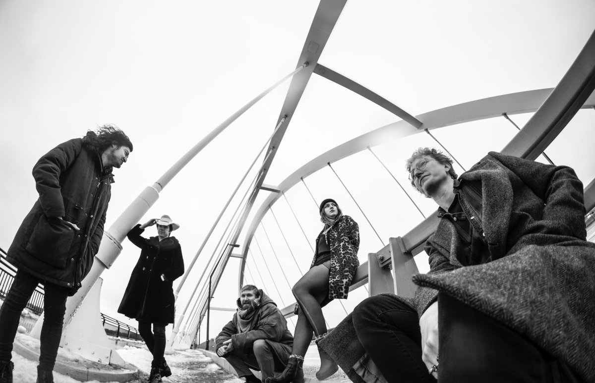
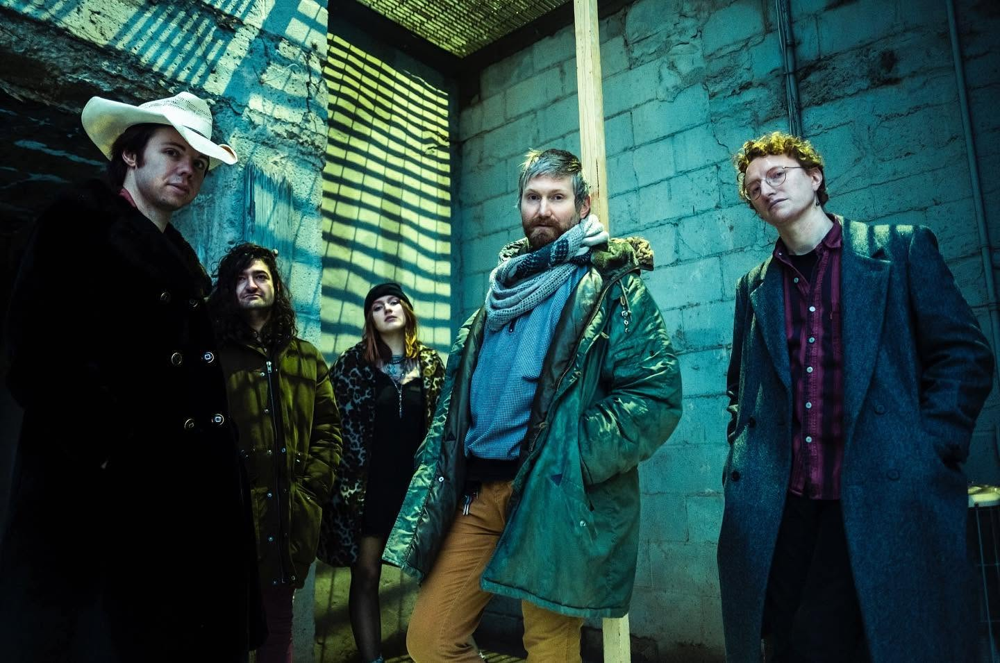
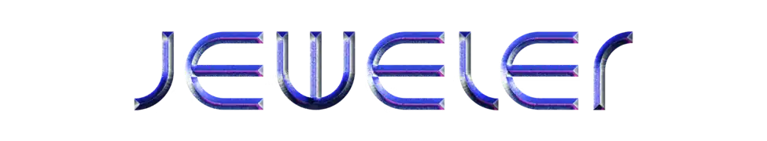

Jeweler is a Sacramento-based six-piece blending dream pop, shoegaze, and art rock with an ear for melody and atmosphere. Originally conceived as the home-recording project of songwriter Michael Voller in Minneapolis, the band released its debut LP, Tiny Circles, in 2021.
Combining shimmering guitars, layered vocal harmonies, synthesizers, and darker post-punk influences, Jeweler's music moves between dreamy, atmospheric passages and moments of noise and intensity. Since relocating to Northern California, Voller has continued to develop the project from his home studio, spending the intervening years writing and recording new material. With new music on the way, Jeweler's current six-piece lineup brings the project's layered compositions to life onstage.
listen to Tiny Circles


video
press
The Big Takeover - Album Premiere: Tiny Circles by Jeweler
V13 - Music Video Premiere: "Don't Cry for Me"
ARTNOIR - Song Premiere: "Don't Cry for Me"


Follow @jewelertheband
Contact EMAIL OBFUSCATION SCHEME for booking
Contact EMAIL OBFUSCATION SCHEME for press inquiries